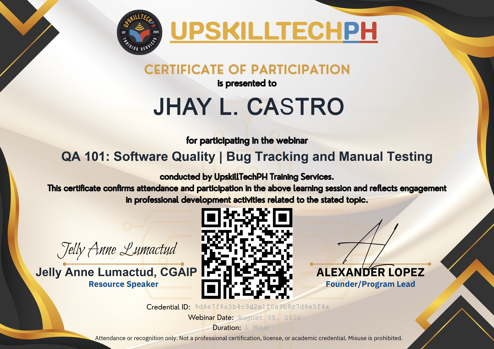

- / ROUTING & SWITCHING
- / NETWORK SECURITY
- / INFRASTRUCTURE SETUP
I D E A S
I N T O
I N T E R F A C E S
B U I L D
D E S I G N
S O L V E
R E P E A T
ABOUT ME
Get to Know Me
I am a graduating Bachelor of Science in Information Technology (BSIT) student at Datamex College of Saint Adeline, specializing in enterprise network infrastructure, system diagnostics, and process automation. My core competencies center on Cisco router and switch provisioning, TCP/IP protocol configurations, subnetting (VLSM/CIDR), VLAN segmentation, and firewall security auditing.
Beyond theoretical coursework, I hold a National Certificate II (NC II) in Computer Systems Servicing and have served as Technical Project Lead at Datamex, where I architected and deployed automated enrollment workflows that eliminated manual administrative bottlenecks. Driven by professional values of integrity, continuous learning, and security-first engineering, my objective is to launch my career as a Junior Network Engineer or Infrastructure Support Specialist, building resilient, scalable systems that keep organizations reliably connected.
What I Do Best
Enterprise-grade networking, security architecture, and system automation.
Network Engineering
Enterprise TCP/IP protocols, Cisco switch & router provisioning, subnetting, VLAN segmentation, and high-availability routing architectures.
Cybersecurity
Advanced firewall rule auditing, intrusion prevention telemetry, automated vulnerability scans, and Zero-Trust access control frameworks.
IT Troubleshooting
Comprehensive system diagnostics, hardware repair, DHCP/DNS latency resolution, and root-cause infrastructure incident management.
Development & Tools
Version control with Git/GitHub, relational database administration with SQL, script automation, and business intelligence reporting.
PORTFOLIO
Featured Projects
AI Repair System
Web App • AI Diagnostics
Store Sales Analytics
Data Analysis • Business Intel
Cloud Infrastructure
Cloud VPC • Systems & DevOps
Zero-Trust Security
Cybersecurity • Threat Telemetry

AI-Assisted Computer Repair Shop Management System
A full-stack system tracking repair tickets with built-in CRUD operations, database management, client validation, and AI-assisted troubleshooting logs.

Enterprise Office Network & Server Infrastructure
Full physical and logical corporate network deployment. Features Cat6 T568B structured cabling, 24-port patch panel distribution, 802.1Q department VLANs, and Windows Server 2022 Active Directory & DHCP.
RESUME
Education & Experience
Education
BS Information Technology
Datamex College of Saint Adeline
Consistent Dean's Lister (1.20 - 1.80 GWA). Coursework includes Database Systems (SQL), Information Management, and Computer Systems Maintenance. Hold a National Certificate II (NC II) in Computer Systems Servicing.
Experience
Technical Project Lead
Datamex College of Saint Adeline
Developed and deployed an automated student enrollment system using Google Forms and AutoCrat, significantly streamlining administrative workflows and data entry.
Official Event Photographer
Datamex College of Saint Adeline
Managed official photography for school functions, ensuring high-quality visual documentation and organizing digital assets for publications.
Student Assistant
Datamex College of Saint Adeline
Managed administrative records, performed routine PC hardware maintenance, and designed promotional visual assets for school events and pageants.
Career Development Plan
Target: Administrative Assistant
Career Goal
Secure a remote or flexible Administrative Assistant role to leverage my technical IT skills and process automation experience to improve office efficiency and workflow management.
Cyber Awareness
Cyber Threats in 2026 and How to Stay Safe
Web Dev 101
System Integration & Connecting Apps via API
QA 101
Software Quality, Bug Tracking and Manual Testing

Arduino 101
Coding Meets Hardware
Pro Skills
21st Century Soft Skills for Tech Pros
CASE STUDIES
Problem-Solving & Security
IT Troubleshooting Cases Documented
Structured root-cause diagnostic procedures with command-line outputs, root-cause analyses, and preventative solutions.
ipconfig /all • arp -a
nslookup • ipconfig /flushdns
ping -t • show interfaces
show vlan brief • Trunk isolation
route print • tracert
Cybersecurity Case Study
In-depth vulnerability assessment analyzing authentication bypass vectors, risk taxonomy, and defensive coding implementations.
SQL Injection (SQLi) in Authentication & Ticketing Systems
Tainted query concatenation: admin' OR '1'='1' --
Parameterized queries (Prepared Statements), Principle of Least Privilege, Input Validation & WAF
EMPLOYABILITY
Professional Readiness Evidence
Interviews & Project Defense
Demonstrated competency in professional communication, live technical articulation, and capstone architectural defense.
AI Literacy Evidence
Audited evidence of responsible AI collaboration across 4 capstone development milestones, paired with critical reflection.
IT Career Development Plan
Strategic one-page career progression plan detailing target engineering specializations, certification pathways, and 3-year milestones.
VERSION CONTROL
My GitHub Repository
@greychase612-stack
Explore my source code, version control history, and technical documentation. All my major projects and portfolio source files are hosted here.
VISIT MY GITHUBMY JOURNEY & EVOLUTION
Final BSIT Capstone Reflection
Evolution of IT Knowledge & Skills
Before entering the BSIT program at Datamex College of Saint Adeline, my understanding of Information Technology was predominantly consumer-level. I was familiar with basic desktop operations, routine OS installations, and casual software usage, but I viewed technology as an end-user rather than an engineer. I understood that data traveled across the internet and that routers provided wireless access, but I had virtually no comprehension of the intricate routing protocols, Layer 2 frame switching, packet encapsulation, or architectural paradigms that power mission-critical communications.
Throughout my academic journey, my skillset underwent a complete paradigm shift from basic digital literacy to disciplined engineering competence. Today, I do not merely operate devices—I analyze network telemetry, design segmented VLAN topologies, calculate complex VLSM subnet allocations, and isolate hardware bottlenecks with structured OSI-model diagnostic methodology. Earning my NC II in Computer Systems Servicing and leading administrative system deployments proved that my skills had graduated from textbook theory into deployable, enterprise-ready technical competencies.
Core Academic Learnings & Systems Thinking
The most profound lessons I acquired extend beyond syntax or specific software. First, I mastered root-cause diagnostic methodology—the discipline of isolating failures systematically from the physical cabling up through transport and application layers rather than relying on trial and error.
Second, I learned defensive systems design, understanding how unmonitored switch ports, misconfigured ACLs, and unsanitized queries introduce severe security vulnerabilities. Third, I discovered the vital role of technical documentation and process automation; building an infrastructure is only sustainable when properly mapped with network topology diagrams, comprehensive READMEs, and verifiable audit trails.
Capstone Projects & Technical Adversity
The project that contributed most substantially to my technical growth was the AI-Assisted Computer Repair Shop Management System. It forced me outside isolated frontend design into real-world systems engineering: binding responsive client UI components to cloud databases (Supabase/PostgreSQL) and integrating an automated Gemini AI diagnostic engine. Unlike small classroom exercises, this full-stack system required end-to-end data integrity, ticket state transitions, client-side validation, and resilient error recovery.
My most daunting technical challenge occurred during real-time database state synchronization and handling asynchronous AI API latency. When network interruptions occurred, unhandled promises caused UI freezes and inconsistent ticket statuses. I overcame this obstacle by architecting structured try-catch-finally wrappers, implementing exponential backoff retry algorithms in api/diagnose.js, and designing optimistic UI updates. This trial demystified distributed systems and taught me that bulletproof error handling separates hobby projects from commercial software.
Continuous Growth & Industry Readiness
Recognizing that technology constantly shifts, I acknowledge clear growth areas. I am actively training to deepen my expertise in Network Automation using Python (Netmiko/NAPALM), Infrastructure as Code (Terraform), and Enterprise Multi-VPC Cloud Routing (AWS Transit Gateway & Direct Connect). Scaling enterprise networks requires programmatic configuration over manual CLI execution.
I aspire to become a respected Senior Network Infrastructure & Security Engineer who architects zero-downtime, zero-trust network backbones. I want to be recognized for unflinching technical integrity, structured incident containment, and the ability to articulate complex network architectures clearly to both executive stakeholders and technical peers.
I am prepared to launch my career in Information Technology because my knowledge is anchored by verifiable evidence: “I learned this. I built this. Here is the evidence. Here is my source code. Here is the live system.” Armed with an NC II credential, real-world project leadership, functional capstone systems, and a passion for network engineering, I am equipped to contribute immediate, measurable value to an enterprise network operations center (NOC) or IT infrastructure team from day one.